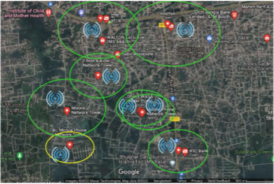
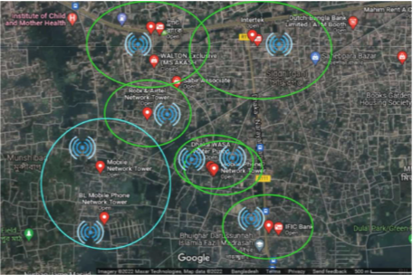

Reduce Power Consumption and Harmful Effects of Cellular Base Stations
Sleep Mode for Base Stations
Fig-2 gives us a picture of where the base stations are placed to serve different groups of users across an area.
The yellow areas highlighted in the figure represent regions where there's not much activity or fewer people using the network at a given time.
During these periods of low activity, the base stations in those areas switch to a sleep mode/Shut Down to conserve energy and resources.
However, when a base station goes into sleep mode, it means that the people in that particular area might experience a drop in the quality of the network service they receive.
Balancing the need for efficient service with environmental concerns is crucial, as we don't want to compromise the quality of service for the sake of being environmentally friendly.
To address this, neighboring base stations can step in and increase the amount of power to cover/handle the area where the slept base station is located.
Given the low activity levels in these areas, it's relatively easy for nearby base stations to take over and ensure uninterrupted service.
Additionally, when base stations are in sleep mode, they consume less power, which not only saves energy but also contributes positively to environmental sustainability.

Fig-2: Area coverage By Cellular Base Stations

Fig-3: Extended Area Coverage By Cellular Base Stations By Switching to Sleep Mode